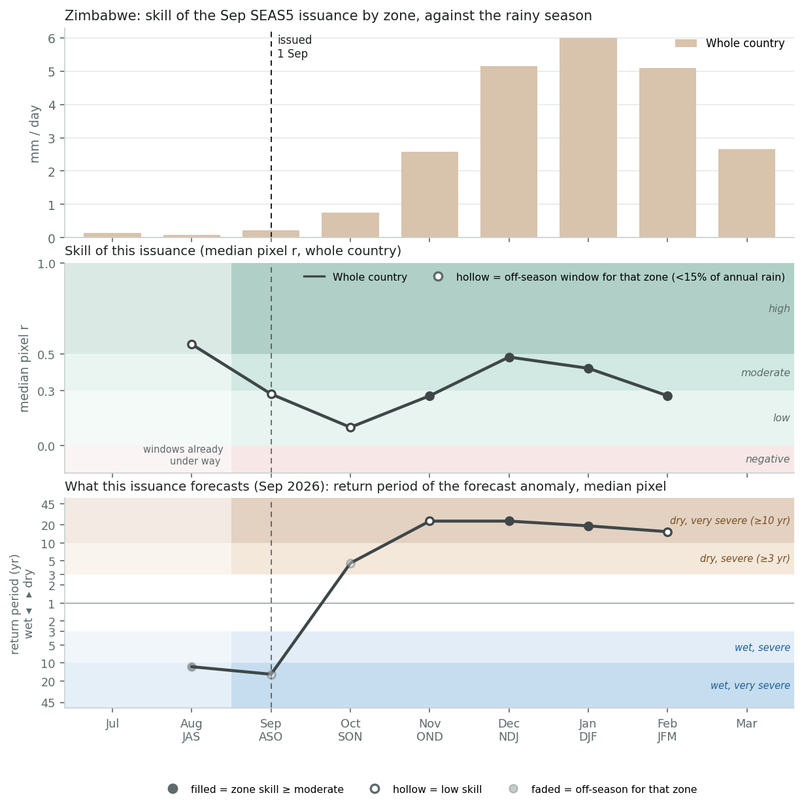
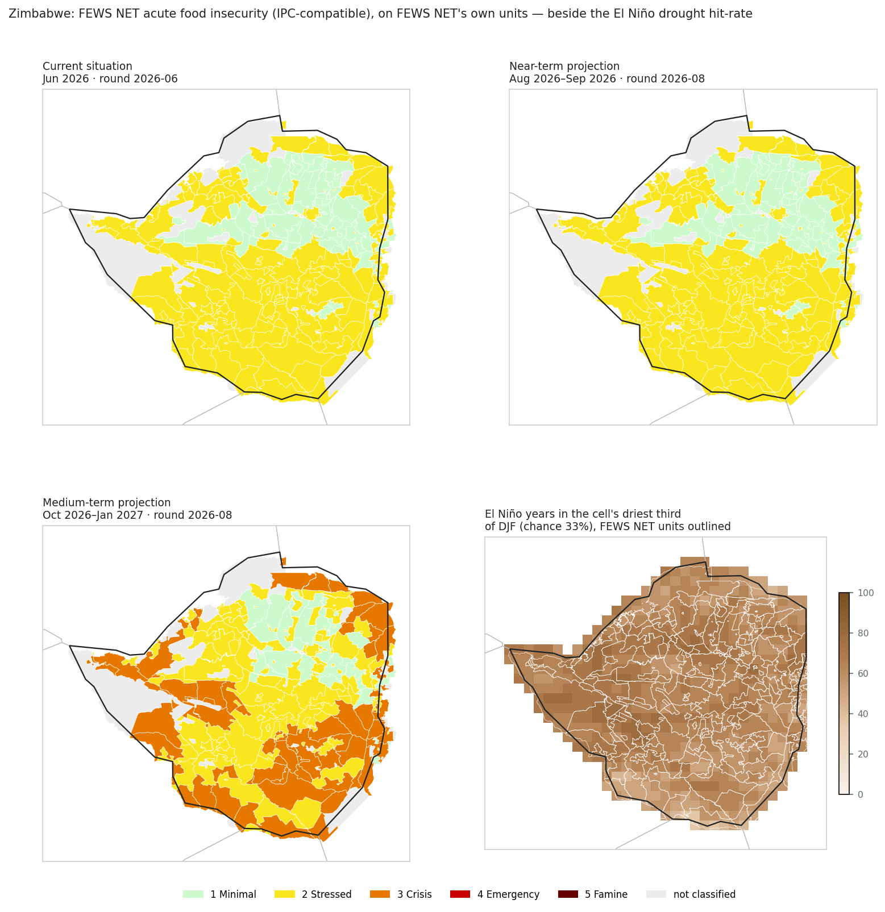
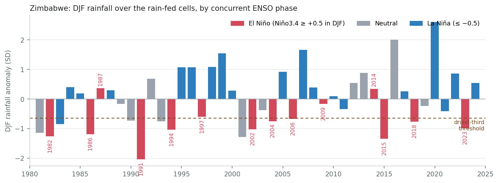
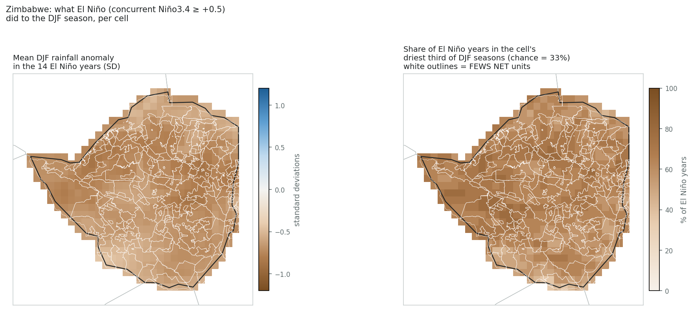
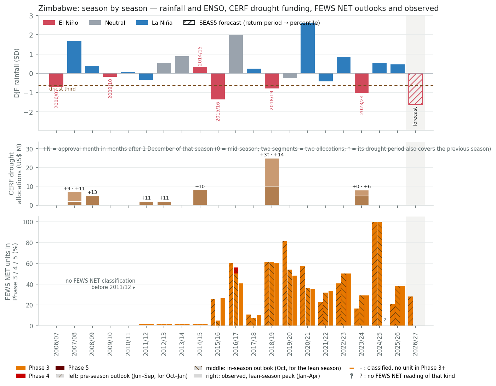
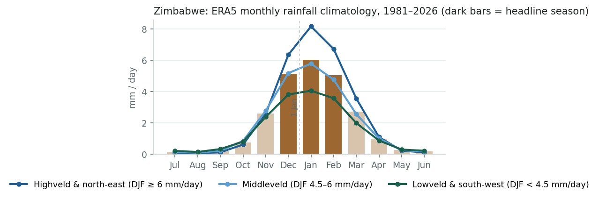
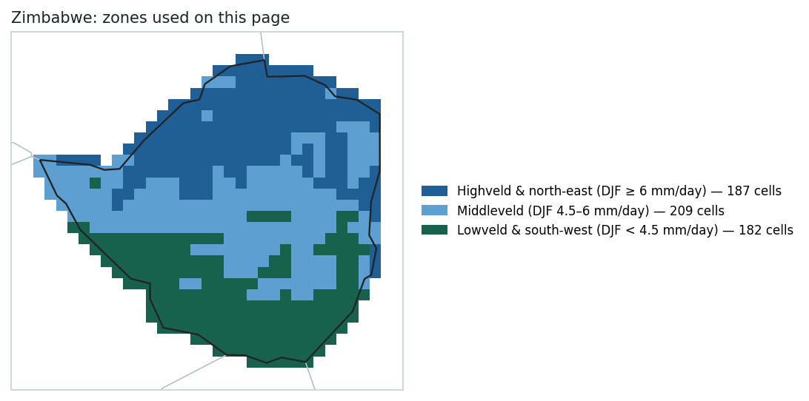
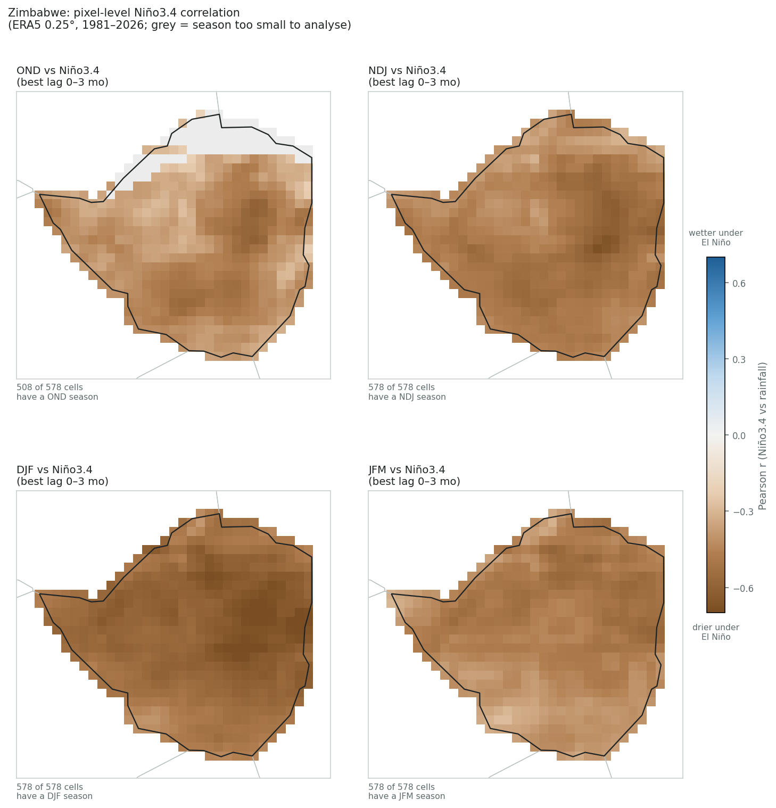
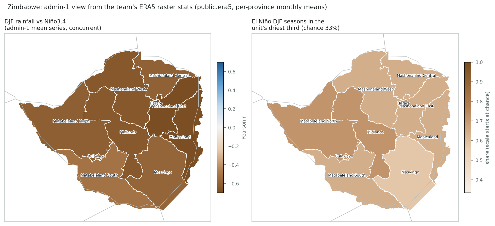

ENSO country deep dive
1. How bad. The September 2026 SEAS5 issuance forecasts a dry season across the whole of Zimbabwe: the national forecast for OND, NDJ, DJF and JFM sits at 15- to 23-year return periods on the dry side of its own 45-year hindcast — among the driest one in twenty forecasts the model has ever made for these months. FEWS NET already projects 57 of 203 units into Phase 3 (Crisis) for October 2026 to January 2027, concentrated in the south and west, before the rains have started.
2. How confident. Moderately, on the sign; less so on the magnitude. SEAS5 skill from September is moderate for the core of the season (NDJ r = 0.48, DJF 0.42) and low for the shoulders, so the model explains about a fifth of the variance at this lead. The record is the stronger argument: ten of the fourteen El Niño DJF seasons since 1981 were in the driest third and none in the wettest, and of the six El Niños that reached +1.5 °C in DJF, four produced a driest-fifth season. The miss rate of roughly one in four is real — 1997/98, the strongest El Niño of the century, was near normal — and this issuance sits unusually deep in the dry tail of its hindcast across the globe, so its return periods should be read as a ranking, not as calibrated probabilities.
3. How much is El Niño. Most of it. Niño3.4 stood at +1.89 °C in August 2026 and rising, on course for one of the strongest events in the record. ENSO explains about 46% of Zimbabwe's DJF rainfall variance (r = −0.68, the strongest national correlation in the survey), the response is uniform across provinces, and SEAS5's skill here is largely the ENSO signal it carries. The rest is the Indian Ocean and weather noise, which is what turned 1997/98 into a non-event.
The figure reads the seas5-skill app's per-pixel skill cube for the 1 September 2026 issuance, summarised as the national median pixel. Top: the rainy season, November to March, unimodal and the same everywhere. Middle: how much skill SEAS5 has for each window from September — moderate for NDJ (0.48) and DJF (0.42), the two windows that carry the season, low for OND and JFM (0.27). Bottom: what the issuance forecasts — a dry season throughout, at return periods of 5 years for SON, 23 for OND and NDJ, 19 for DJF and 15 for JFM. Under the app's rule (return period ≥ 3 years at moderate skill or better) NDJ and DJF would raise an alert.
What the Sep 2026 issuance forecasts. Windows at or beyond the app's 3-year return-period threshold (in-season windows excluded): SON dry 5 yr (low skill), OND dry 23 yr (low skill), NDJ dry 23 yr (moderate skill), DJF dry 19 yr (moderate skill), JFM dry 15 yr (low skill). Under the app's rule — an alert needs the return period and at least moderate skill — this issuance would raise an alert for NDJ, DJF.

| Zone | Cells | JAS in-season | ASO in-season | SON 0-mo lead | OND 1-mo lead | NDJ 2-mo lead | DJF 3-mo lead | JFM 4-mo lead |
|---|---|---|---|---|---|---|---|---|
| Whole country | 578 | +0.55 high 96% ≥ mod. · wet 11.5 yr | +0.28 low 44% ≥ mod. · wet 15.3 yr | +0.10 low 2% ≥ mod. · dry 4.6 yr | +0.27 low 39% ≥ mod. · dry 23.0 yr | +0.48 moderate 89% ≥ mod. · dry 23.0 yr | +0.42 moderate 84% ≥ mod. · dry 19.2 yr | +0.27 low 35% ≥ mod. · dry 15.3 yr |
Each cell: median pixel r, its bin, the share of the zone's cells at moderate-or-better skill, and the median return period of the Sep 2026 forecast anomaly (dry = forecast below its hindcast median). Skill source: skill_stats_grid_detrended.nc (seas5-skill, DEV blob), the same cube behind the app's pixel skill map. Median of pixel correlations, not the correlation of the area mean, so it is a conservative summary for a coherent area.
FEWS NET's August 2026 outlook update, at FEWS NET's own livelihood-zone × district units and not aggregated here. The June current situation and the August–September projection are Phase 1 and 2 throughout after the 2025/26 harvest. The medium-term projection for October 2026 to January 2027 moves 57 of 203 units to Phase 3 (Crisis) across Matabeleland North and South, Masvingo, southern Manicaland and the Zambezi valley — the lean season and the first half of the forecast rains. The last panel overlays the FEWS NET unit outlines on the El Niño drought hit-rate from the next section: the units projected into Crisis are also where El Niño seasons land in the driest third most often.

Fourteen DJF seasons since 1981 had El Niño conditions (Niño3.4 ≥ +0.5). Ten fell in Zimbabwe's driest third and seven in the driest fifth; none reached the wettest third. La Niña seasons ran the other way: one of twenty in the driest third, eleven in the wettest. The El Niño list is the country's disaster calendar — 1991/92 (driest in the record), 2015/16 (second), 1982/83, 1986/87, 1994/95, 2002/03, 2004/05, 2006/07, 2018/19 and 2023/24, when the season collapsed in February and a state of disaster followed in April. The misses are 1997/98 (near normal despite the strongest El Niño of the century; a positive Indian Ocean Dipole overrode the Pacific), 1987/88, 2009/10 and 2014/15.
For the current season the relevant comparison is the strong events. Of the six El Niños that reached +1.5 °C in DJF — 1982/83, 1991/92, 1997/98, 2009/10, 2015/16, 2023/24 — four produced a driest-fifth season; two (1997/98, 2009/10) were near normal. That is the historical basis for the confidence: El Niño roughly doubles the odds of a driest-third season and all but rules out a wet one, but a strong El Niño is not a guarantee, and a miss rate of one in four is why an ENSO-only trigger is not enough on its own.

| ENSO phase (concurrent) | Seasons | Mean anomaly (SD) | In driest third | In driest fifth | In wettest third |
|---|---|---|---|---|---|
| El Niño | 14 | −0.81 | 71% | 50% | 0% |
| Neutral | 11 | −0.06 | 36% | 18% | 36% |
| La Niña | 20 | +0.60 | 5% | 0% | 55% |
| Year | Niño3.4 (DJF) | Rainfall anomaly (SD) | Rank (1 = driest) | Outcome |
|---|---|---|---|---|
| 1982 | +2.16 | −1.29 | 4 of 45 | driest fifth |
| 1986 | +1.13 | −1.21 | 5 of 45 | driest fifth |
| 1987 | +0.71 | +0.35 | 29 of 45 | near normal |
| 1991 | +1.77 | −2.06 | 1 of 45 | driest fifth |
| 1994 | +1.00 | −1.06 | 7 of 45 | driest fifth |
| 1997 | +2.23 | −0.62 | 16 of 45 | near normal |
| 2002 | +0.87 | −1.04 | 8 of 45 | driest fifth |
| 2004 | +0.59 | −0.76 | 13 of 45 | driest third |
| 2006 | +0.66 | −0.69 | 15 of 45 | driest third |
| 2009 | +1.50 | −0.18 | 21 of 45 | near normal |
| 2014 | +0.55 | +0.34 | 28 of 45 | near normal |
| 2015 | +2.50 | −1.36 | 2 of 45 | driest fifth |
| 2018 | +0.75 | −0.78 | 11 of 45 | driest third |
| 2023 | +1.79 | −1.00 | 9 of 45 | driest fifth |
The 15 driest-third DJF seasons: 1981 (Neutral), 1982 (El Niño), 1983 (La Niña), 1986 (El Niño), 1990 (Neutral), 1991 (El Niño), 1993 (Neutral), 1994 (El Niño), 2001 (Neutral), 2002 (El Niño), 2004 (El Niño), 2006 (El Niño), 2015 (El Niño), 2018 (El Niño), 2023 (El Niño). Phase split: El Niño 10, Neutral 4, La Niña 1.

Every season since 1981 on one line: how dry it was, whether it was an El Niño season, whether CERF funded a drought response for it, and what FEWS NET was projecting for October–January before that season began — the same product as the projection we have now, so the rows are comparable with the top one. Phase 4 (Emergency) has appeared once in FEWS NET's Zimbabwe record — the October 2016 outlook projected twelve southern units into Emergency for February–April 2017, the lean season after the 2015/16 drought — and never in a current-situation classification; Phase 5 never. The El Niño seasons that became disasters started from very different places: 2015/16 from 26% of units projected in Crisis, 2023/24 from 17%; the seasons after them (2016/17, 2024/25) began from 60% and 100%. 2026/27 begins from 28%.

| Season | DJF rainfall anomaly (SD) · rank, 1 = driest | ENSO Niño3.4 in DJF | CERF drought allocation for this season's drought | FEWS NET outlook for Oct–Jan, issued before the season share of units in Phase 3 / 4 / 5 |
|---|---|---|---|---|
| 2026/27 (forecast) | SEAS5 Sep issuance: dry, return period 19 yr (moderate skill) | El Niño +1.89 in Aug 2026 | — | 28% / 0% / 0% Oct 2026–Jan 2027 · round 2026-08 (ML2) · 203 units |
| 2025/26 | +0.47 · 32 of 45 | La Niña -0.51 | — | 21% / 0% / 0% Oct 2025–Jan 2026 · round 2025-10 (ML1, issued in October) · 203 units |
| 2024/25 | +0.54 · 33 of 45 | La Niña -0.59 | — | 100% / 0% / 0% Oct 2024–Jan 2025 · round 2024-09 (ML2) · 203 units |
| 2023/24 | −1.00 · 9 of 45 | El Niño +1.79 | US$ 8.0 M · Dec 2023 (Rapid, 5.0 M, +0 mo); Jun 2024 (Rapid, 3.0 M, +6 mo) | 17% / 0% / 0% Oct 2023–Jan 2024 · round 2023-09 (ML2) · 203 units |
| 2022/23 | +0.85 · 36 of 45 | La Niña -0.68 | — | 41% / 0% / 0% Oct 2022–Jan 2023 · round 2022-09 (ML2) · 203 units |
| 2021/22 | −0.42 · 17 of 45 | La Niña -0.96 | — | 23% / 0% / 0% Oct 2021–Jan 2022 · round 2021-09 (ML2) · 203 units |
| 2020/21 | +2.62 · 45 of 45 | La Niña -1.05 | — | 58% / 0% / 0% Oct 2020–Jan 2021 · round 2020-09 (ML2) · 203 units |
| 2019/20 | −0.25 · 20 of 45 | Neutral +0.50 | — | 81% / 0% / 0% Oct 2019–Jan 2020 · round 2019-06 (ML2) · 203 units |
| 2018/19 | −0.78 · 11 of 45 | El Niño +0.75 | US$ 24.9 M · Mar 2019 (Rapid, 10.1 M, +3 mo; its drought period also covers 2017/18); Feb 2020 (Rapid, 14.9 M, +14 mo) | 62% / 0% / 0% Oct 2018–Dec 2018 · round 2018-06 (ML2) · 203 units |
| 2017/18 | +0.25 · 25 of 45 | La Niña -0.91 | — | 11% / 0% / 0% Oct 2017–Dec 2017 · round 2017-06 (ML2) · 203 units |
| 2016/17 | +2.01 · 44 of 45 | Neutral -0.34 | — | 60% / 0% / 0% Oct 2016–Dec 2016 · round 2016-06 (ML2) · 203 units |
| 2015/16 | −1.36 · 2 of 45 | El Niño +2.50 | — | 26% / 0% / 0% Oct 2015–Dec 2015 · round 2015-07 (ML2) · 203 units |
| 2014/15 | +0.34 · 28 of 45 | El Niño +0.55 | US$ 8.1 M · Oct 2015 (Rapid, 8.1 M, +10 mo) | 0% / 0% / 0% Oct 2014–Dec 2014 · round 2014-07 (ML2) · 203 units |
| 2013/14 | +0.88 · 37 of 45 | Neutral -0.43 | — | 0% / 0% / 0% Oct 2013–Dec 2013 · round 2013-07 (ML2) · 203 units |
| 2012/13 | +0.54 · 34 of 45 | Neutral -0.43 | US$ 2.0 M · Nov 2013 (Rapid, 2.0 M, +11 mo) | 0% / 0% / 0% Oct 2012–Dec 2012 · round 2012-07 (ML2) · 85 units |
| 2011/12 | −0.35 · 19 of 45 | La Niña -0.87 | US$ 2.0 M · Nov 2012 (Rapid, 2.0 M, +11 mo) | 0% / 0% / 0% Oct 2011–Dec 2011 · round 2011-07 (ML2) · 85 units |
| 2010/11 | +0.08 · 23 of 45 | La Niña -1.42 | — | — |
| 2009/10 | −0.18 · 21 of 45 | El Niño +1.50 | — | — |
| 2008/09 | +0.38 · 30 of 45 | La Niña -0.85 | US$ 5.0 M · Jan 2010 (Rapid, 5.0 M, +13 mo, by date) | — |
| 2007/08 | +1.67 · 43 of 45 | La Niña -1.64 | US$ 7.0 M · Sep 2008 (Rapid, 2.0 M, +9 mo, by date); Nov 2008 (Rapid, 5.0 M, +11 mo, by date) | — |
| 2006/07 | −0.69 · 15 of 45 | El Niño +0.66 | — | — |
| 2005/06 | +0.92 · 38 of 45 | La Niña -0.83 | — | — |
| 2004/05 | −0.76 · 13 of 45 | El Niño +0.59 | — | — |
| 2003/04 | −0.39 · 18 of 45 | Neutral +0.31 | — | — |
| 2002/03 | −1.04 · 8 of 45 | El Niño +0.87 | — | — |
| 2001/02 | −1.31 · 3 of 45 | Neutral -0.20 | — | — |
| 2000/01 | +0.28 · 26 of 45 | La Niña -0.76 | — | — |
| 1999/00 | +1.54 · 42 of 45 | La Niña -1.69 | — | — |
| 1998/99 | +1.09 · 41 of 45 | La Niña -1.57 | — | — |
| 1997/98 | −0.62 · 16 of 45 | El Niño +2.23 | — | — |
| 1996/97 | +1.07 · 39 of 45 | La Niña -0.51 | — | — |
| 1995/96 | +1.08 · 40 of 45 | La Niña -0.89 | — | — |
| 1994/95 | −1.06 · 7 of 45 | El Niño +1.00 | — | — |
| 1993/94 | −0.77 · 12 of 45 | Neutral +0.11 | — | — |
| 1992/93 | +0.68 · 35 of 45 | Neutral +0.13 | — | — |
| 1991/92 | −2.06 · 1 of 45 | El Niño +1.77 | — | — |
| 1990/91 | −0.75 · 14 of 45 | Neutral +0.39 | — | — |
| 1989/90 | −0.18 · 22 of 45 | Neutral +0.03 | — | — |
| 1988/89 | +0.29 · 27 of 45 | La Niña -1.80 | — | — |
| 1987/88 | +0.35 · 29 of 45 | El Niño +0.71 | — | — |
| 1986/87 | −1.21 · 5 of 45 | El Niño +1.13 | — | — |
| 1985/86 | +0.18 · 24 of 45 | La Niña -0.59 | — | — |
| 1984/85 | +0.40 · 31 of 45 | La Niña -1.07 | — | — |
| 1983/84 | −0.87 · 10 of 45 | La Niña -0.63 | — | — |
| 1982/83 | −1.29 · 4 of 45 | El Niño +2.16 | — | — |
| 1981/82 | −1.16 · 6 of 45 | Neutral -0.08 | — | — |
Rainfall: ERA5 area mean over the rain-fed cells, standardised over 1981–2026. ENSO phase: concurrent Niño3.4 (≥ +0.5 El Niño, ≤ −0.5 La Niña; pinned NOAA series). CERF: Rapid Response / Underfunded Emergencies applications with emergency type “Drought” from the team's OneGMS mirror, attributed to the rainy season named in the CERF drought-period supplement — when that period spans two failed seasons the allocation sits under the later one and says so — or, failing that, to the season whose harvest year the allocation fell in (“by date”); “+N mo” is the approval month counted from 1 December of that season. FEWS NET: the outlook for October–January issued between June and September of that year — the same product as the current medium-term projection, so each row shows the pre-season picture that season started from — as shares of FEWS NET's classified units in Phase 3, 4 and 5 (unit counts, since older unit vintages carry no geometry; FEWS NET classifies areas and publishes no population by phase). “Issued in October” marks a year with no June–September outlook. Cells are shaded darker for worse outcomes; most recent season first, the forecast season on top.
Latest Niño3.4 in NOAA PSL's current series: +1.89 °C for August 2026 (three-month mean +1.73), i.e. El Niño conditions by the ±0.5 threshold used on this page. The historical analysis below uses the survey's pinned Niño3.4 series (NOAA PSL, ERSST v5 basis), which runs about 0.2 °C cooler than the current ERSST v6 series.
Two things establish how much of the forecast is El Niño: the current state of the Pacific, and how tightly Zimbabwe's rainfall has followed it. Everything below is computed from the ERA5 monthly grid and the NOAA Niño3.4 index used by the global survey, restricted to cells inside the country.
One rainy season, November to March, with December–February carrying about 55% of the annual total. The three climatology bands in the chart and the locator map are there only to show that the season's timing is the same across the country, which is why the rest of this page treats Zimbabwe as one unit.


The DJF correlation with Niño3.4 is −0.68 nationally, the strongest in the survey; every cell is past −0.3 and 84% past −0.5. An r of −0.68 means ENSO accounts for about 46% of the year-to-year variance in DJF rainfall. The signal is already present in OND (−0.5), peaks in DJF and holds through JFM, with the same sign everywhere: there is no part of the country and no part of the season that responds the other way. This is the textbook southern-Africa teleconnection, quantified for Zimbabwe since Cane, Eshel and Buckland (1994) showed Pacific sea-surface temperature explained more than 60% of the variance in the national maize yield.

| Season | Cells analysed | Share of annual rain | Median r | Range | Significant (p<0.05) | |r| ≥ 0.30 | |r| ≥ 0.50 |
|---|---|---|---|---|---|---|---|
| OND | 508 / 578 | 30% | −0.41 | −0.61 to −0.20 | 95% negative | 94% | 14% |
| NDJ | 578 / 578 | 47% | −0.48 | −0.68 to −0.30 | 100% negative | 100% | 38% |
| DJF | 578 / 578 | 55% | −0.58 | −0.73 to −0.39 | 100% negative | 100% | 84% |
| JFM | 578 / 578 | 47% | −0.46 | −0.59 to −0.28 | 100% negative | 99% | 26% |
From the team's per-province ERA5 raster stats: concurrent DJF correlations run from −0.71 in Mashonaland East to −0.52 in Matabeleland South, and in every province at least eight of the fourteen El Niño seasons were in the province's own driest third against fewer than one in six La Niña seasons. The coupling is a little weaker in the far south-west; otherwise the country moves together.

| Province | ERA5 pixels | r (concurrent) | El Niño mean (SD) | El Niño seasons in driest third | La Niña in driest third | El Niño driest-third seasons |
|---|---|---|---|---|---|---|
| Mashonaland East | 1096 | −0.71 | −0.82 | 64% of 14 | 5% | 1982, 1986, 1991, 1994, 1997, 2002, 2015, 2018, 2023 |
| Manicaland | 1231 | −0.69 | −0.79 | 64% of 14 | 10% | 1982, 1986, 1991, 1994, 1997, 2002, 2004, 2015, 2018 |
| Harare | 33 | −0.68 | −0.78 | 71% of 14 | 5% | 1982, 1986, 1991, 1994, 1997, 2002, 2004, 2015, 2018, 2023 |
| Mashonaland West | 1958 | −0.65 | −0.78 | 64% of 14 | 5% | 1982, 1986, 1991, 1994, 2002, 2004, 2015, 2018, 2023 |
| Midlands | 1700 | −0.64 | −0.75 | 71% of 14 | 5% | 1982, 1986, 1991, 1994, 1997, 2002, 2006, 2015, 2018, 2023 |
| Matabeleland North | 2586 | −0.62 | −0.78 | 71% of 14 | 5% | 1982, 1986, 1991, 1994, 2002, 2004, 2006, 2015, 2018, 2023 |
| Mashonaland Central | 958 | −0.61 | −0.66 | 64% of 14 | 15% | 1982, 1986, 1991, 1994, 1997, 2002, 2015, 2018, 2023 |
| Masvingo | 1960 | −0.59 | −0.72 | 57% of 14 | 15% | 1982, 1986, 1991, 2002, 2004, 2009, 2015, 2018 |
| Bulawayo | 17 | −0.59 | −0.69 | 71% of 14 | 10% | 1982, 1986, 1991, 1997, 2002, 2004, 2006, 2015, 2018, 2023 |
| Matabeleland South | 1873 | −0.52 | −0.61 | 64% of 14 | 10% | 1982, 1986, 1991, 2002, 2004, 2006, 2009, 2015, 2023 |
Generated by enso_deep_dive.py from deep_dives/zwe.toml. Method and data as in the global survey.